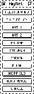

SNNS provides five tools for easy creation of large, regular networks.
All these tools carry the common name BigNet. They are called by
clicking the button in the manager panel. This
invokes the selection menu of figure  , where the
individual tools can be selected. This chapter gives a short
indroduction to the handling of each of them.
, where the
individual tools can be selected. This chapter gives a short
indroduction to the handling of each of them.
